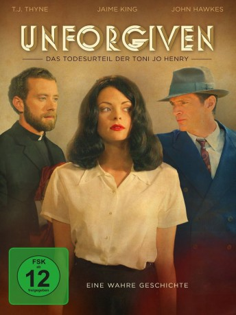

#8558 Unforgiven - Das Todesurteil der Toni Jo Henry
Alternativ: The Pardon
 
 IMDB-Wertung: 5.6 / 10
IMDB-Wertung: 5.6 / 10  Metascore: 0
Metascore: 0 
Toni Jo, die als Kind sehr viel durchmachen musste und misshandelt wurde, hat endlich Glück und Liebe gefunden. Doch dieses soll nur von kurzer Dauer sein: Als ihr Ehemann Cowboy ins Gefängnis geschickt wird, lässt sie sich auf einen wahnwitzigen Plan mit ihrem Komplizen Arkie ein, um ihren Liebsten zu befreien. Gemeinsam wollen sie eine Bank überfallen, um die Berufungskosten bezahlen zu können. Bei der Durchführung des Plans geht aber schief, was nur schief gehen kann, denn als die beiden ein Auto klauen, kommt es zum Handgemenge mit dem Fahrzeughalter, woraufhin Toni Jo ihn erschießt. Das bedeutet für die bildhübsche Frau das Todesurteil. Doch war sie wirklich die Schuldige? Toni Jo muss mit allen Mitteln um ihr Leben kämpfen und steht dabei vor allem wegen ihres guten Aussehens im Mittelpunkt der Medienaufmerksamkeit.
Jahr: 2013
Dauer: 109 Minuten
FSK: 12
Land: USA Studio: Monterey MediaTonspuren: DTS - ,
Untertitel: Deutsch,
Auflösung: 1080p (1920x816) Größe: 6737 MB
Genre: Krimi
Regisseur: Tom Anton
Drehbuch: Tom Anton
Soundtrack: Ashley Irwin
Darsteller:
 Jaime King als Toni Jo Henry
Jaime King als Toni Jo Henry John Hawkes als Finnon 'Arkie' Burke
John Hawkes als Finnon 'Arkie' Burke Jason Lewis als Cowboy
Jason Lewis als Cowboy Leigh Whannell als Clement Moss
Leigh Whannell als Clement Moss T.J. Thyne als Father Richard
T.J. Thyne als Father Richard M.C. Gainey als Gibbs Duhon
M.C. Gainey als Gibbs Duhon Tim Guinee als Norman Anderson
Tim Guinee als Norman Anderson Douglas M. Griffin als Toni Jo's Father
Douglas M. Griffin als Toni Jo's Father- Niki Spiridakos als Niki
- Jeddah Danielle Salera als Young Toni Jo
- Gregg Brazzel als Wild Willie Russell
 Stuart Greer als George McQuiston
Stuart Greer als George McQuiston Sue Rock als Miss Charlotte
Sue Rock als Miss Charlotte- Derek Wayne Johnson als Photographer
- John F. Beach als Daniel Baker
 Brady Coleman als Texas Judge
Brady Coleman als Texas Judge Jackson Beals als Bailiff #1
Jackson Beals als Bailiff #1 Clay Chamberlin als The Deputy
Clay Chamberlin als The Deputy- Mary Griffitts als Bertha
- Ashleigh Borman als Julie
- Chris Fry als Sherriff Henry Reid
- Nancy Wilder als Mrs. Calloway
- Meade Patton als Captain
 Ron Fagan als Juror
Ron Fagan als Juror- Celeste Roberts als Aunt Emma
- Patrick Kirton als Albert Stokes
- Stan McDonald als Man 2
- Steven Miramontz als Boxing Fan
- Walt Hollis als Trooper Lebleiu
- Ed Bruce als J.P. Copeland
- Michael Showers als Detective
- John Valdetero als Mr. Calloway
- Mike Martindale als The Ringmaster
- Ashley-Anne Parker als Court Visitor / Boxing match spectator
- Patrick Michael Carney als Referee
- Gioacchino Brucia als Man #1
- John T. Billingsley als Courtroom Reporter
- Jeannie Perrin als Trial Observer
- Kip Cummings als Deputy Sheriff
- Randy Bordelon als Deputy Sheriff
- Ginger Attaway als Stand-in for Jaime King
- John E. Outtrim als Dr. Clement
- Hevin Hampton als Courtroom Visitor
- Brandon Raines als Deputy Sheriff
- Tami Liller als The Woman
- Matthew Reardon als Reporter
- Brad Dison als Reporter
- Tia Landrum als Lita Calloway
- Thomas Wallace als Juror
- Barry Barton als John Dean
Datei: X:\2013(N-Z)\Unforgiven - Das Todesurteil der Toni Jo Henry (2013, FSK12, 1920x816).mkv seit 22.03.2018
Festplatte: HD 2013(I-Z)-2014(A-Z)
 Es gibt insgesamt 133 Filme in der Gruppe '2013(N-Z)'
Es gibt insgesamt 133 Filme in der Gruppe '2013(N-Z)'